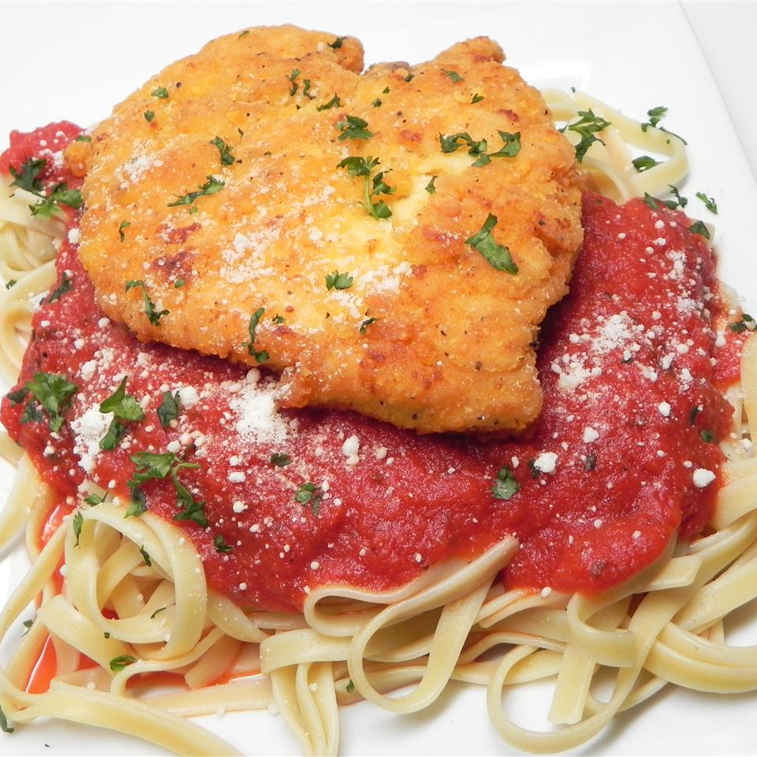

Rick's Best Chicken Parmesan

Description
Crunchy chicken Parmesan that your family will love.
Everyone I have made this for has told me it's the best chicken Parmesan ever.
Serve over your favorite pasta with your favorite sauce (I use marinara).
Sometimes I sprinkle mozzarella cheese over my chicken as well as the Parmesan.
I also garnish with chopped fresh basil.
Ingredients
- 4 skinless, boneless chicken breasts
- ¼ cup all-purpose flour
- ¼ cup crushed fish-shaped crackers (such as Goldfish®)
- 3 tablespoons grated Parmesan cheese, divided
- ½ teaspoon garlic powder
- ½ teaspoon salt
- ½ teaspoon ground black pepper
- 2 eggs
- ¾ cup vegetable oil
Steps
- Place chicken breasts between 2 sheets of heavy plastic on a solid, level surface. Firmly pound with the smooth side of a meat mallet to 1/2-inch thickness.
- Combine flour, crackers, 1 1/2 tablespoons Parmesan cheese, garlic powder, salt, and pepper in a resealable plastic bag.
- Beat eggs in a shallow bowl. Dip chicken breasts into eggs to coat; place in flour mixture and seal bag. Toss chicken in the flour mixture until well covered.
- Heat oil in a skillet over high heat. Add chicken breasts; cook until underside is browned and crispy, 4 to 5 minutes. Flip; sprinkle 1 teaspoon Parmesan cheese over each chicken breast. Spoon hot oil over cheese until melted. Drain on paper towels for 2 to 3 minutes before serving.